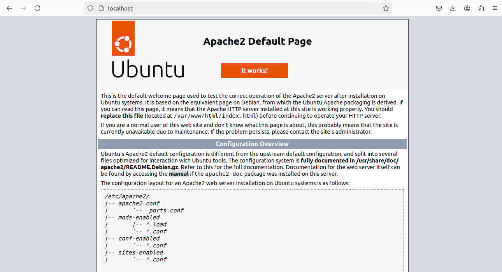

Hướng dẫn
Hướng dẫn cơ bản
Cài đặt Apache
Để cài đặt trên Linux bạn cần terminal lên bằng cách nhấn shortcut trên màn hình hoặc Ctrl+Alt+T. Dưới đây là các bước để cài được trên Ubuntu 1 bản phân phối phổ biến của Linux.
Yêu Cầu Hệ Thống:
- Hệ điều hành: Ubuntu 18.04 trở lên.
- Quyền truy cập root hoặc người dùng có quyền sudo.
- Kết nối Internet để tải các gói cần thiết.
-
Cập Nhật Hệ Thống
Trước khi cài tốt nhất nên cập nhật trước vì đôi khi có những gói tài nguyên mà bạn chưa cài hay chưa cập nhật.Mở terminal và chạy lệnh sau:
bashsudo apt update sudo apt upgrade -
Cài Đặt Apache
Sau khi hệ thống được cập nhật, bạn có thể cài đặt Apache bằng lệnh sau:
bashsudo apt install apache2 -
Cấu hình tường lửa
Sau khi cài xong bạn hãy cấu hình lại tường lửa để có thể cho phép các truy cập từ bên ngoài vào port mặc định của web.
Trong quá trình cài đặt, Apache đã tự đăng ký một số profile (cấu hình) ứng dụng trong UFW để cho phép hoặc chặn quyền truy cập đến Apache qua tường lửa.Bạn có thể dùng lệnh sau để xem các profile ufw hiện có:
bashsudo ufw app listSau đó nó sẽ hiện ra danh sách như thế này:
bashAvailable applications: Apache Apache Full Apache SecureChúng ta hiện tại đang có 3 profile của Apache:
- Apache: Chỉ mở port 80 (lưu lượng không được mã hóa).
- Apache Full: Mở port 80 và port 443 (lưu lượng được mã hóa bằng TLS/SSL).
- Apache Secure: Chỉ mở port 443 (được mã hóa bằng TLS/SSL).
Ở đây chúng tôi sẽ lựa chọn là "Apache Full"
bashsudo ufw allow 'Apache Full'Sau khi thành công bạn sẽ thấy đoạn mã như sau:
bashRules updated Rules updated (v6) -
Kiểm tra trạng thái của apache
Sau khi cài đặt, bạn có thể kiểm tra xem Apache đã chạy hay chưa bằng cách:
bashsudo systemctl status apache2Nếu Apache đang chạy, bạn sẽ thấy một thông báo cho biết dịch vụ đang hoạt động. nó sẽ hiện giống đọan mã bên dưới.
bashapache2.service - The Apache HTTP Server Loaded: loaded (/lib/systemd/system/apache2.service; enabled; vendor prese> Active: active (running) since Mon 2024-08-05 01:32:58 +07; 6 days ago Docs: https://httpd.apache.org/docs/2.4/ Main PID: 797 (apache2) Tasks: 55 (limit: 9283) Memory: 7.3M CPU: 4.212s CGroup: /system.slice/apache2.service ├─ 797 /usr/sbin/apache2 -k start ├─30908 /usr/sbin/apache2 -k start └─30909 /usr/sbin/apache2 -k startBên cạnh đó bạn cũng nên xác nhận lại bằng cách vào trình duyệt và gõ http://localhost hoặc địa chỉ IP của server: 127.0.0.1. Nếu thành công nó sẽ xuất ra trang như thế này.

Quản lý cơ bản
Sau khi cài đặt và khởi chạy web server, bạn có thể bắt đầu tìm hiểu một số lệnh quản lý cơ bản bằng công cụ systemctl
Chạy lệnh sau để dừng web server:
sudo systemctl stop apache2
Để khởi động server:
sudo systemctl start apache2
Để restart dịch vụ:
sudo systemctl restart apache2
Nếu bạn chỉ thực hiện các thay đổi cấu hình trên web server thì Apache có chế độ reload mà không cần ngắt kết nối bằng lệnh sau:
sudo systemctl reload apache2
Theo mặc định, Apache được cấu hình để tự khởi động mỗi khi server boot. Bạn có thể tắt tính năng này bằng lệnh:
sudo systemctl disable apache2
Còn khi bạn tắt và muốn bật lại có thể chạy lệnh này:
sudo systemctl enable apache2
Cấu hình cơ bản
Khi sử dụng web server Apache, bạn có thể sử dụng các virtual host (tương tự như các server block – khối server – trong Nginx) để đóng gói các chi tiết cấu hình và lưu trữ nhiều miền từ một server.
Apache trên Ubuntu 20.04 đã enable sẵn một server block, được cấu hình để cung cấp tài liệu từ thư mục /var/www/html. Nếu chỉ host một trang thì không có vấn đề gì, nhưng đối với số lượng trang lớn thì sẽ khó quản lý. Thay vì chỉnh sửa trực tiếp /var/www/html thì bạn nên tạo một cấu trúc thư mục trong /var/www cho trang của bạn, để nguyên /var/www/html làm thư mục mặc định để cung cấp nếu request của client không khớp với bất kỳ trang nào.
-
Tạo thư mục chứa file, tài nguyên web cuả bạn
Bạn hãy tạo thư mục cho trang của bạn bằng lệnh sau:
bashsudo mkdir /var/www/tênbạnmuốnđặtSau đó bạn có thể viết file cho trang web của bạn vào thư mục này.
Nếu bạn đã có file và muốn copy vào cũng có thể chạy bằng lệnh này và đề phòng bạn chưa có quyền truy cập đầy đủ hãy chạy thêm lệnh sudo:
bashsudo cp -r /đường/dẫn/đến/thư/mục /var/www/tênbạnmuốnđặt -
Cấu hình Virtual host
Để Apache có thể cung cấp nội dung thì bạn cần tạo một file virtual host với các directive chính xác. Thay vì chỉnh sửa trực tiếp file cấu hình mặc định trong /etc/apache2/sites-available/000-default.conf thì bạn có thể tạo một file mới cho web bạn trong /etc/apache2/sites-available/tênbạnmuốnđặt.conf bằng cách lệnh:
bashsudo nano /etc/apache2/sites-available/tênnbạnmuốnđặt.confSau đó paste đoạn code dưới đây:
bash<VirtualHost *:80> ServerAdmin webmaster@localhost ServerName têtênnbạnmuốnđặt.com DocumentRoot /var/www/thư mụcchưawebcủabạn </VirtualHost>Lưu và đóng lại file sau khi hoàn tất bằng Ctrl+X -> Y -> Enter
-
Đưa trang web vào hoạt động
Bây giờ bạn có thể cho trang hoạt động bằng bằng công cụ a2ensite:
bashsudo a2ensite tênnbạnmuốnđặt.confVà hãy tắt trang web mặc định của nó
bashsudo a2dissite 000-default.confSau đó bạn có thể kiểm tra lỗi xem mình có cấu hình đúng hay chưa bằng lệnh:
bashsudo apache2ctl configtestNếu output là Syntax OK thì bạn đã thành công
Cuối cùng là restart lại Apache để áp dụng các thay đổi:
bashsudo systemctl restart apache2
Bây giờ thì Apache đã bắt đầu cung cấp nội dung cho tên miền của bạn. Bạn có thể vào trang http://tênnbạnmuốnđặt để kiểm tra.
Cài DNS
Cài Bind9
-
Cập nhật hệ thống:
Nếu mọi người đã cập nhật hệ thống ở trên kia rồi thì có thể bỏ qua bước này
bashsudo apt update sudo apt upgrade -
Cài đặt gói Bind9
bashsudo apt install bind9 -
Kiểm tra trạng thái của bind9
Sau khi cài đặt xong để biết có đang chạy hay chưa thì mọi người có thể gõ:
bashsudo systemctl status Bind9Nếu thành công nó sẽ hiện ra kết quả như sau:
bashnamed.service - BIND Domain Name Server Loaded: loaded (/usr/lib/systemd/system/named.service; enabled; preset: en> Active: active (running) since Wed 2024-08-14 00:03:50 +07; 3min 27s ago Docs: man:named(8) Main PID: 1082 (named) Status: "running" Tasks: 14 (limit: 3489) Memory: 12.1M (peak: 13.1M) CPU: 260ms CGroup: /system.slice/named.service └─1082 /usr/sbin/named -f -u bindNgược lại nếu nó vẫn rông hiện running thì bạn hãy chạy lệnh này:
bashsudo systemctl start bind9
Vậy là các bạn đã hoàn thành xong các bước cài đặt hãy đi tới bước tiếp theo.
Cấu hình DNS
-
Cấu hình tệp Local
Để cấu hình được bạn cần vào file `named.conf.local`
bashsudo nano /etc/bind/named.conf.localNgoại trừ một vài comments, tệp này sẽ trống. Ở đây bạn sẽ chỉ định các forward zones và reverse zones của mình. Các DNS zone chỉ định phạm vi cụ thể để dễ quản lí và xác định các bản ghi DNS.Vì tất cả các tên miền ví dụ trong hướng dẫn này đều nằm trong phân vùng con web.com, nên bạn sẽ sử dụng nó để làm forward zone. Ở đây địa chỉ IP ví dụ sẽ là: 192.168.30.10 thì bạn nên viết ngược lại ở reverse.
Thêm forward zone và reverse zone với các dòng sau, hãy nhớ thay thế tên zone thành của bạn như sau:
bashzone "web.com" { type master; file "/etc/bind/db.web.com"; }; zone "30.168.192.in-addr.arpa" { type master; file "/etc/bind/db.reverse"; }; -
Khởi tạo forward zone file
Forward zone file là nơi bạn xác định các bản ghi DNS để tra cứu DNS chuyển tiếp. Tức là, khi DNS nhận được một truy vấn tên, ví dụ như host1.nyc3.example.com, nó sẽ tìm kiếm trong forward zone file để phản hồi địa chỉ IP riêng tương ứng của host1.
Bạn sẽ dựa trên forward zone file tại mẫu `db.local`. Sao chép nó đến vị trí đúng bằng các lệnh sau:
bashsudo cp /etc/bind/db.local /etc/bind/db.webTiếp đến, hãy chỉnh sửa forward zone file với lệnh:
bashsudo nano /etc/bind/db.webHãy sửa theo cấu hình dưới đây:
bash$TTL 604800 @ IN SOA web.com. web@admin. ( 2 ; Serial 604800 ; Refresh 86400 ; Retry 2419200 ; Expire 604800 ) ; Negative Cache TTL ; @ IN NS web.com. @ IN A 192.168.30.10 Cấu hình reverse zone file